Rotation Direction (Tracking)
Detector Change
m.RotationDirection.DetectorChange.formula <- brmsformula(
IsRotationDifferent ~ IsDetectorChangeImporved * SignalingType * ResourceSpeed + (1 | Participant),
family = bernoulli()
)
m.RotationDirection.DetectorChange.formula_comparison <- brmsformula(
IsRotationDifferent ~ IsDetectorChangeImporved * SignalingType * ResourceSpeed
)
m.RotationDirection.DetectorChange.priors <-
prior(normal(0, 1), class = "Intercept") +
prior(normal(0, 0.5), class = b) +
prior(normal(0, 0.1), class = 'sd')Model fitting
m.RotationDirection.DetectorChange.fit <- brm(
formula = m.RotationDirection.DetectorChange.formula,
data = m.RotationDirection.DetectorChange.data,
prior = m.RotationDirection.DetectorChange.priors,
chains = 4,
cores = 4,
seed = 42,
warmup = 500,
iter = 2000,
file = paste0(fits_path, 'rotation_dir_detector_change_1.rds'),
backend = "cmdstanr",
threads = threading(100),
control = list(adapt_delta = 0.95),
save_pars = save_pars(all = TRUE)
)Model diagnostics
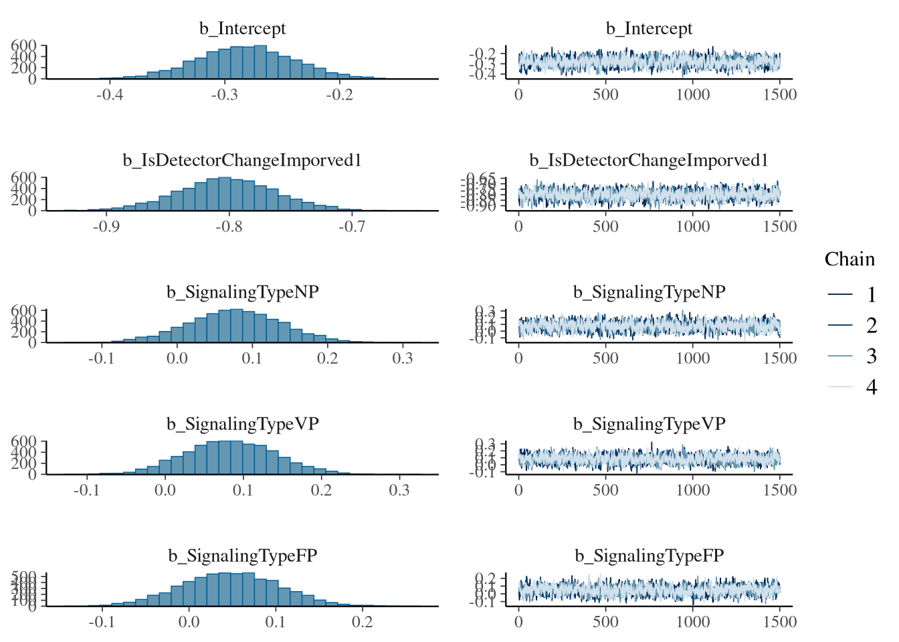
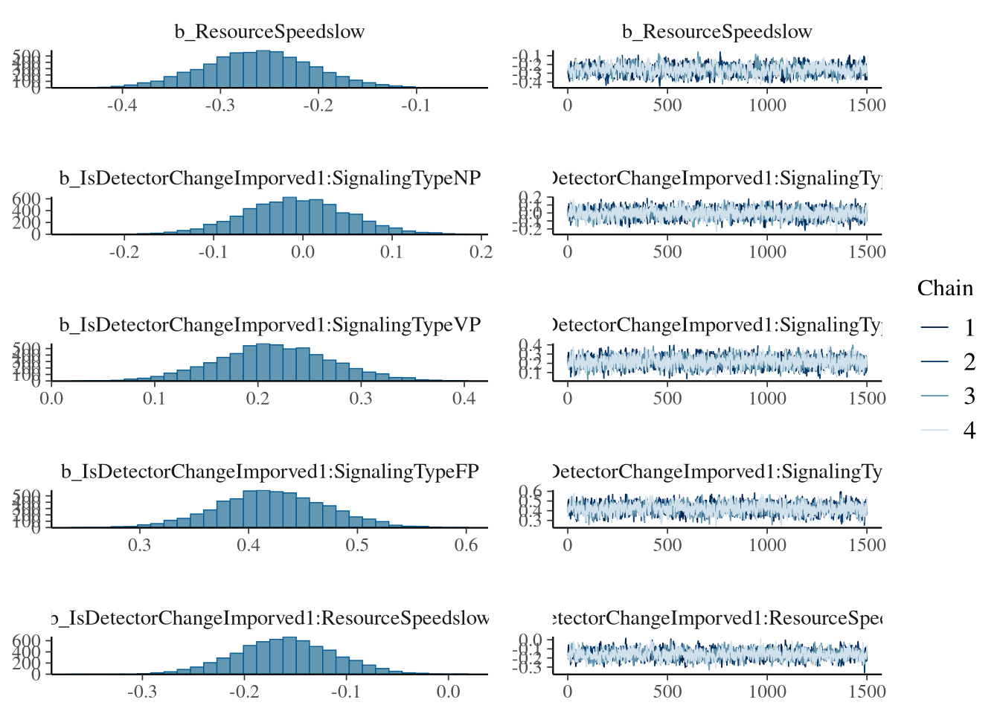
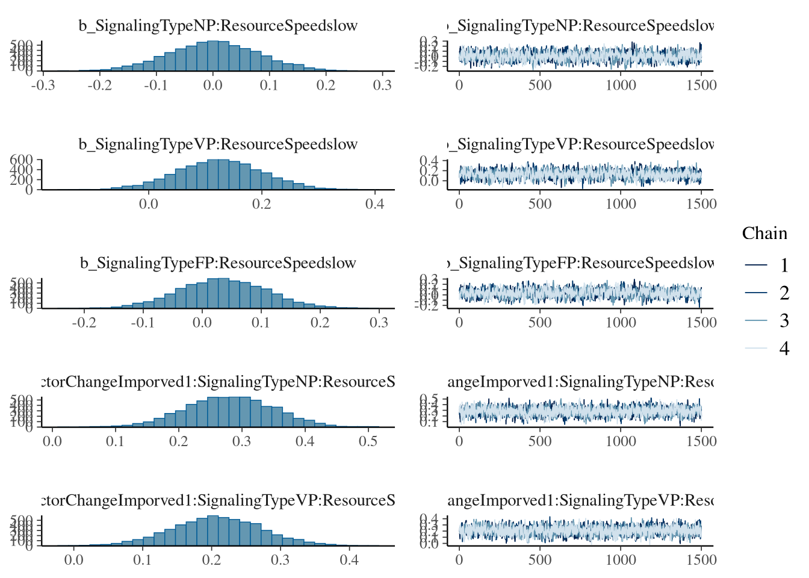
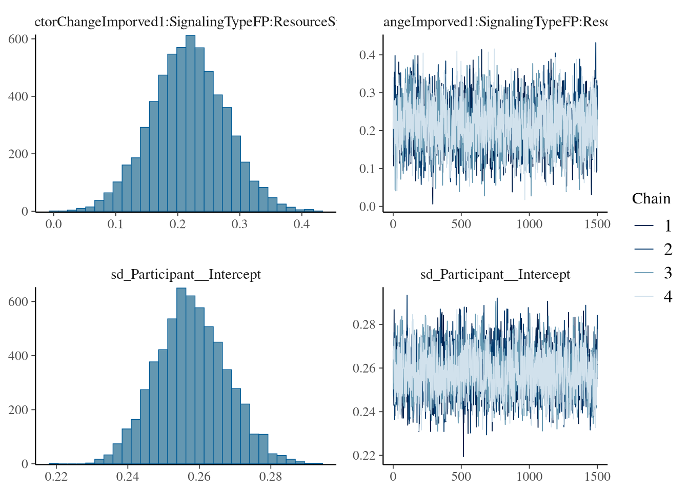
## Family: bernoulli
## Links: mu = logit
## Formula: IsRotationDifferent ~ IsDetectorChangeImporved * SignalingType * ResourceSpeed + (1 | Participant)
## Data: m.RotationDirection.DetectorChange.data (Number of observations: 208861)
## Draws: 4 chains, each with iter = 2000; warmup = 500; thin = 1;
## total post-warmup draws = 6000
##
## Multilevel Hyperparameters:
## ~Participant (Number of levels: 620)
## Estimate Est.Error l-95% CI u-95% CI Rhat Bulk_ESS Tail_ESS
## sd(Intercept) 0.26 0.01 0.24 0.28 1.00 1658 3150
##
## Regression Coefficients:
## Estimate Est.Error l-95% CI u-95% CI Rhat Bulk_ESS Tail_ESS
## Intercept -0.28 0.04 -0.36 -0.20 1.00 1227 2458
## IsDetectorChangeImporved1 -0.80 0.04 -0.88 -0.72 1.00 1465 2737
## SignalingTypeNP 0.08 0.06 -0.05 0.20 1.00 1435 2836
## SignalingTypeVP 0.08 0.06 -0.03 0.20 1.00 1455 3134
## SignalingTypeFP 0.05 0.06 -0.06 0.16 1.00 1221 2329
## ResourceSpeedslow -0.26 0.06 -0.37 -0.15 1.00 1024 1704
## IsDetectorChangeImporved1:SignalingTypeNP -0.01 0.06 -0.12 0.11 1.00 1892 3355
## IsDetectorChangeImporved1:SignalingTypeVP 0.22 0.06 0.11 0.33 1.00 1886 3127
## IsDetectorChangeImporved1:SignalingTypeFP 0.42 0.05 0.32 0.52 1.00 1720 3144
## IsDetectorChangeImporved1:ResourceSpeedslow -0.16 0.05 -0.25 -0.06 1.00 1345 2815
## SignalingTypeNP:ResourceSpeedslow 0.00 0.08 -0.15 0.16 1.00 1267 2417
## SignalingTypeVP:ResourceSpeedslow 0.13 0.08 -0.02 0.27 1.00 1101 2130
## SignalingTypeFP:ResourceSpeedslow 0.03 0.07 -0.11 0.18 1.00 1066 1805
## IsDetectorChangeImporved1:SignalingTypeNP:ResourceSpeedslow 0.28 0.07 0.14 0.41 1.00 1739 3635
## IsDetectorChangeImporved1:SignalingTypeVP:ResourceSpeedslow 0.21 0.07 0.08 0.34 1.00 1698 3227
## IsDetectorChangeImporved1:SignalingTypeFP:ResourceSpeedslow 0.22 0.06 0.10 0.34 1.00 1612 3154
##
## Draws were sampled using sample(hmc). For each parameter, Bulk_ESS
## and Tail_ESS are effective sample size measures, and Rhat is the potential
## scale reduction factor on split chains (at convergence, Rhat = 1).Figure
fig_rotation_direction_detector_change <- m.RotationDirection.DetectorChange.draws %>%
mutate(IsDetectorChangeImporved = ifelse(IsDetectorChangeImporved == 1, "Approaching Resource", "Moving Away from Resource")) %>%
ggplot(aes(x = SignalingType,
y = .epred,
color = SignalingType,
fill = SignalingType,
shape = ResourceSpeed)) +
ggdist::stat_pointinterval(
position = position_dodge(width = .5),
point_interval = "mean_hdci",
.width = 0.9,
point_size = 3.6,
) +
theme_nice(legend.pos = "right") +
scale_color_manual(breaks = c('A', 'NP', 'VP', 'FP'),
aesthetics = c("colour", "fill"),
values = c("#000000", "#DF536B", "#61D04F", "#2297E6"),
guide = guide_legend(title = "Payoff Condition")) +
scale_shape_manual(values = c(21, 24), guide = guide_legend(title = "Resource")) +
facet_grid(cols = vars(IsDetectorChangeImporved)) +
theme_clean() +
theme(legend.position = "bottom") +
panel_border() +
labs(y = "P(Rotation Direction Change)", x = "") # "Payoff Condition"
fig_rotation_direction_detector_change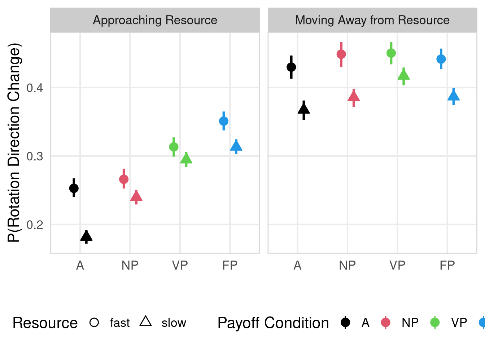
Social Information
Model fitting
Model diagnostics
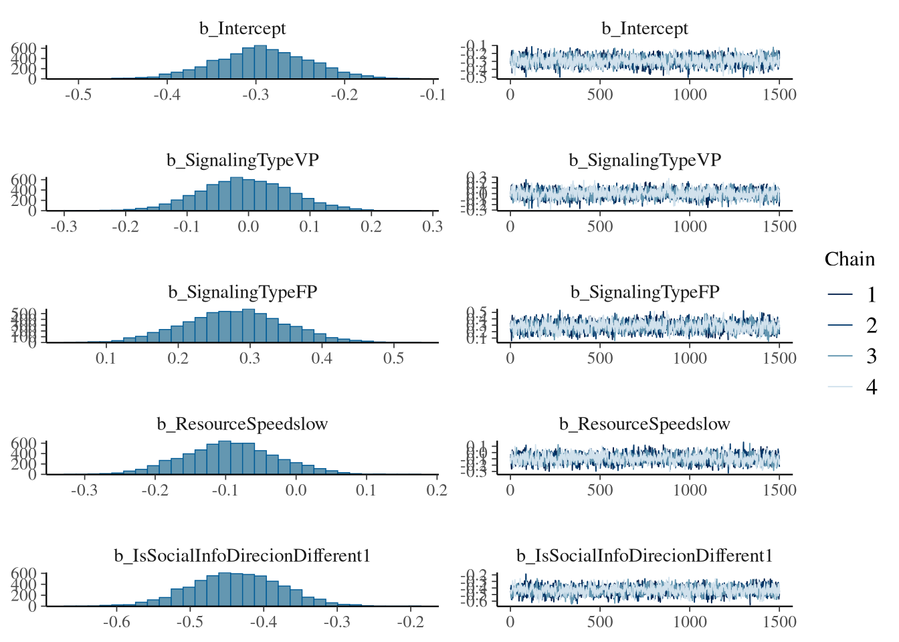
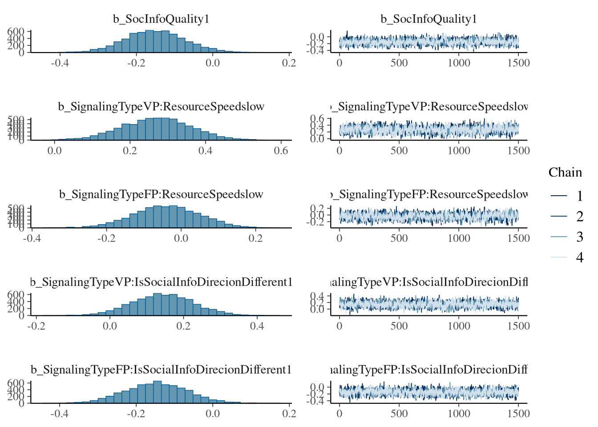
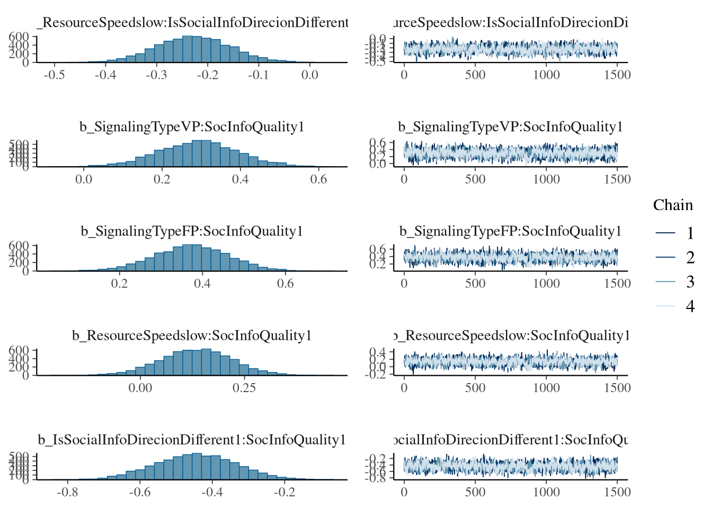
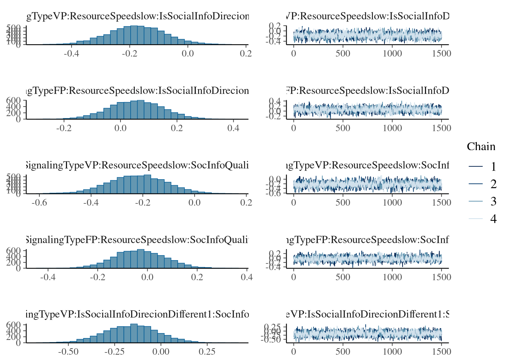
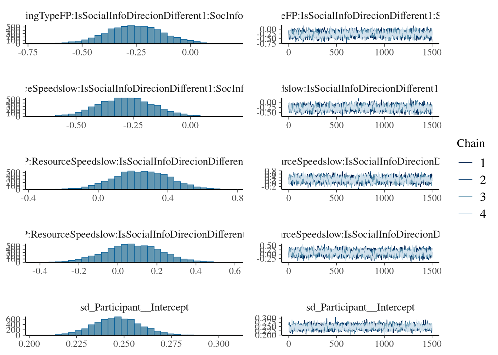
Model predictions
Figure
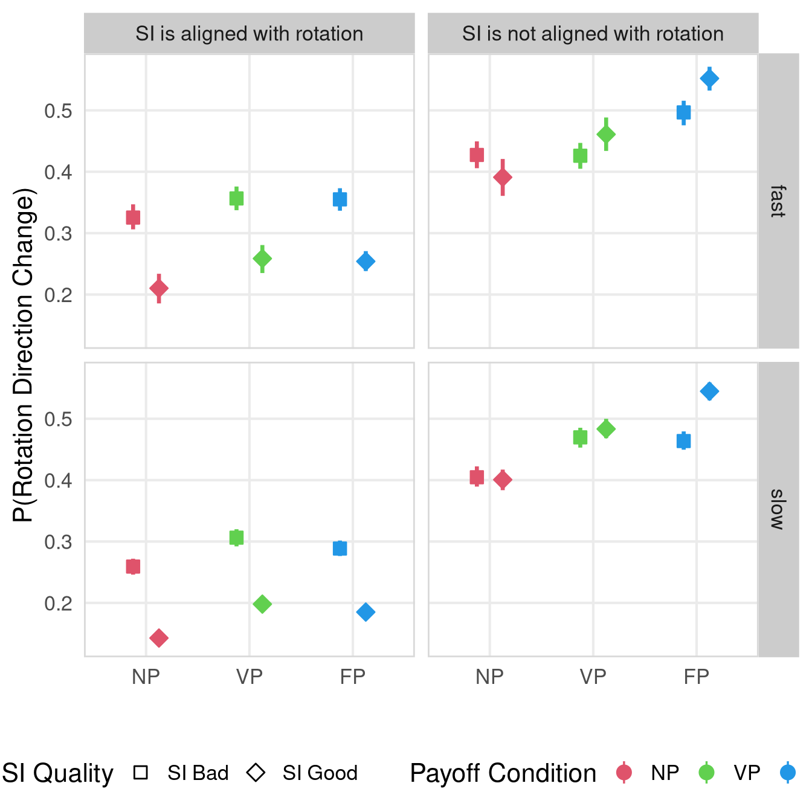